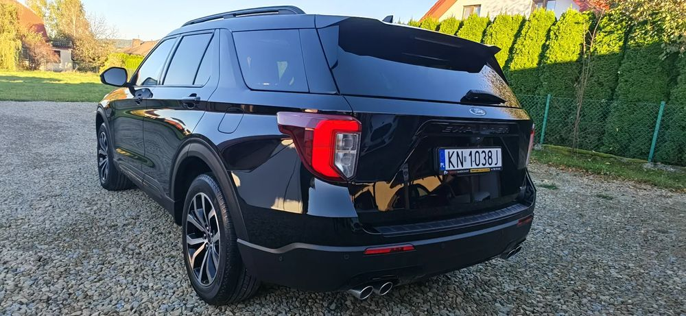
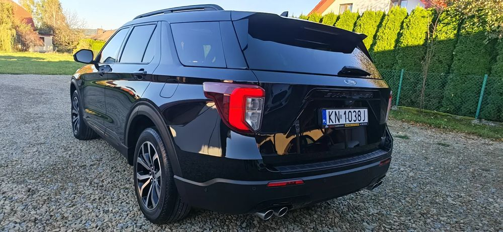

WKRÓTCE W OFERCIE
Dzień Dobry
✅Vin : WF02K8GY6LGB37100
------------------------------------------------------------------
Zapraszam na ponad 1h 13 minutową Szczegółowa Prezentacja VIDEO na otomoto lub moim kanale Youtube Uczciwe Samochody Nowy Sacz Rafał Głaczyński
------------------------------------------------------------------
FORD EXPLORER ST-LINE wersja Europejska na GWARANCJI ASO Polska. Bezwypadkowy 4x4 3.0 benzyna 457 KM 825 Nm ok.6 sekund - 100 km/h Phev czyli benzyna + hybryda + prąd
7 miejsc, 4 fotele z ISOFIX, 4x4 Panorama+szyberdach , Fotele chłodzone z masażami, Nagłośnienie Bang& Olufsen + subwoofer.
Zarejestrowany w Polsce.
------------------------------------------------------------------
Zapraszam do kontaktu po Dokumentacje w jakim stanie Explorer został zakupiony na podstawie Rzeczoznawcy DEKRA z Niemiec
------------------------------------------------------------------
ST-LINE będzie po Serwisie w ASO z Gwarancją Ford Polska na rok z możliwością przedłużania co roku do 200 tyś km.
W trakcie przygotowania na serwisie w ASO Polska. Gdzie są przeprowadzane akcje serwisowe, które obejmują każdego Explorera.
Bez inwestycji Gotowy do Długiej Eksploatacji.
------------------------------------------------------------------
Zapraszam na swój profil Facebook Uczciwe Samochody Nowy Sącz Rafał Głaczyński.
Całą Ofertę znajdą Państwo na moim Profilu Facebook Uczciwe Samochody Nowy Sacz Rafał Głaczynski
------------------------------------------------------------------
Sprzedaż na podstawie FV VAT 23%. Podana cena to wartość brutto z podatkiem VAT 23%.Możliwy kredyt dla osób prywatnych, Leasing dla Firm przez mojego współpracownika Wojtka.
------------------------------------------------------------------
✅Data Pierwszej rejestracji 01.07.2020
✅Data produkcji 20.02.2020
✅Automat 10 biegowy
✅Przebieg 74457 km
✅Bezwypadkowy
✅Serwisy ASO Niemcy
Praktyczne maksymalne wyposażenie bez haka, który można domontować
➡️Napęd AWD 4x4
➡️7 miejsc + 4 fotele z ISOFIX
➡️Panorama + szyberdach + elektryczna roleta
➡️Wentylowane fotele
➡️Masaże
➡️Podgrzewane przednie fotele + tylna kanapa
➡️Reflektory LED aktywny
➡️Moduł TCU czyli zdalne z telefonu odpalanie, gaszenie, otwieranie, zamykanie etc.
➡️Aktywny tempomat
➡️Nagłośnienie Bang& Olufsen + subwoofer
➡️Center Line
➡️Lane Assist
➡️System antykolizyjny
➡️Blis
➡️Cross traffic alert
➡️Relingi dachowe
➡️Roletki w tylnych drzwiach
➡️Przyciemnione tylne szyby
➡️Kamera przednia
➡️Kamera tylna
i wiele wiele innych ..
------------------------------------------------------------------
Zapraszam do Zakupu oraz sprawdzenia Opinii na mój temat na Facebooku oraz Google Uczciwe Samochody Nowy Sącz Rafał Głaczyński
Pozdrawiam


 
